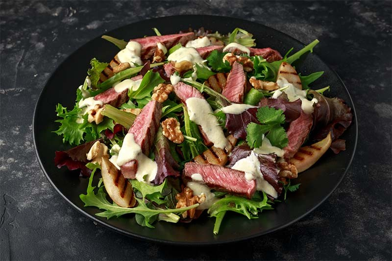

Ensalada de Carne de Vacuno con Peras, Nueces, Brotes Y Salsa de Queso Azul

Ingredientes
- 300 g de ternera de España
- 150 g lechuga brotes tiernos variados
- 20 nueces peladas
- 1 pera
Para la salsa
- 100 g queso azul
- Nata para cocinar
- Nuez moscada
- Pimienta
Elaboración
- En primer lugar, cortamos la carne en filetes gruesos. En una sartén con un poco de aceite de oliva marcamos la carne a fuego fuerte. Cuando esté dorada la carne, retiramos y salpimentamos al gusto.
- Dejamos enfriar un poco y cortamos la carne en tiras. Pelamos la pera y la cortamos en trozos pequeños. La pasamos por la misma sartén que la carne de vacuno, simplemente para que se dore.
- Por otro lado, lavamos bien los brotes tiernos y cortamos más pequeños si es necesario, y reservamos. Limpiamos las nueces y partimos por la mitad.
- En un cazo, ponemos la nata para cocinar y calentamos a fuego medio. Cuando haya cogido temperatura, añadimos el queso azul, pimienta y nuez moscada. Removemos hasta que coja densidad y se cree una crema homogénea. Retiramos del fuego y dejamos que atempere.
- Por último, en un plato ponemos los brotes tiernos, las nueces, la pera partida y la ternera. Removemos la salsa y aderezamos al gusto nuestra deliciosa ensalada con la salsa de queso azul.